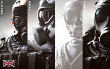
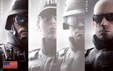
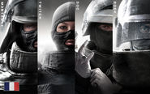
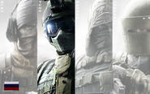
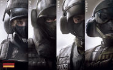

De basis spel is voorzien van tweeëntwintig beschikbaar Operators, elk afkomstig uit de FBI SWAT , SAS , GSG 9 , GIGN , Spetsnaz , en JTF2 CTU's. (Navy SEALS operators worden toegevoegd op de elfde mei.) En kunnen worden aangepast aan verschillende graden. Aanvallers en verdedigers beschikken elk over elf unieke Operators, met slechts één van elke operator in staat om actief per rond te zijn. The Recruit is een uitzondering op deze regel want hij is beschikbaar voor beide kanten en elk team kan meer dan een hebben. 8 Operators zullen naar verwachting worden toegevoegd in de toekomst van nieuwe CTU's.




